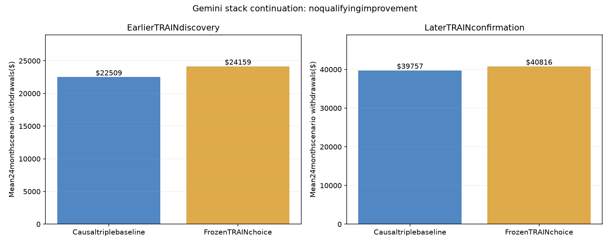

BRK30 + MORN30 + TRD30PM · Funded payout research · TRAIN only
No qualifying replacement. The 31-cell continuation selected K $8,400 with both deep-cushion gates at $9,000 on earlier TRAIN. It improved mean base-scenario withdrawals by 7.33% on earlier TRAIN and 2.66% on later TRAIN. The frozen acceptance gate required at least 5% on both. No deployed or paper settings changed.
These amounts are mean hypothetical withdrawals over 139 overlapping 24-month TRAIN windows. They are neither evaluation-pass profit nor verified live account payouts.
Discovery: 55 monthly starts from July 2010 through January 2015; each 24-month window ends by January 2017. Confirmation: 61 starts from January 2017 through January 2022, all ending within TRAIN. The intervening windows were purged from selection to prevent overlap across that boundary. One configuration was frozen before later-TRAIN confirmation, and no substitute was chosen afterward.
| Period | Configuration | 24-month withdrawals | Windows | S0 closure % | S3 risk-flag % | S4 risk-flag % |
|---|---|---|---|---|---|---|
| discovery | Causal triple baseline | 22,508.99 | 55 | 0.00 | 0.00 | 5.45 |
| discovery | Frozen earlier-TRAIN choice | 24,159.06 | 55 | 0.00 | 0.00 | 5.45 |
| confirmation | Causal triple baseline | 39,757.38 | 61 | 0.00 | 1.64 | 6.56 |
| confirmation | Frozen earlier-TRAIN choice | 40,816.01 | 61 | 0.00 | 1.64 | 6.56 |

On later TRAIN, the base-scenario mean rose from $39,757 to $40,816. Under S3 stress it fell from $29,443 to $28,162. The candidate remains a rejected research result despite its small base-scenario gain.
{
"name": "triple_K8400_G9000",
"book": "triple",
"K": 8400.0,
"gate1": 9000.0,
"gate2": 9000.0,
"max_p4": 1500.0
}
The search covered the triple stack and the TRD60Q quad stack across the predefined keep/gate grid, plus separate MES 30-minute, E57, and MES momentum additions. It did not complete every possible penta-stack combination.
The account model still clips daily P&L at a $1,000 loss and checks end-of-day closure. Its conservative risk flag is a largest-position stop-risk proxy, not an observed intrabar floor breach. It can include a planned trade that a daily stop would skip. This audit does not establish exact DLL/floor execution or compliance with any current funded-account agreement.
The original payout schedule, floor assumptions, and fixed reference-price normalization were retained for comparability. Actual account terms were not independently verified. Overlapping windows are dependent; years of previous TRAIN optimization remain part of the selection history. Neither external validation/test data nor forward paper ledgers were used for selection. There is no independent unseen confirmation.
The optimized replay reconciles withdrawals plus ending balance to trading P&L. It matches an independent Python account reference on 1,017 scenario/window paths, and the targeted fixture suite passed. The complete original scripts and rejected candidates are preserved.
Frozen protocol · All 31 discovery cases · Choice frozen before later TRAIN · Calendar reconciliation · Full result · Verification